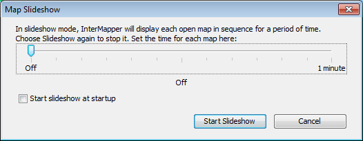
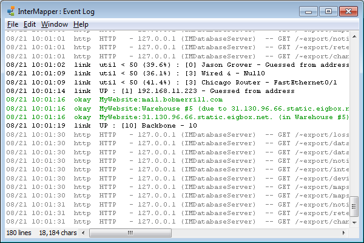
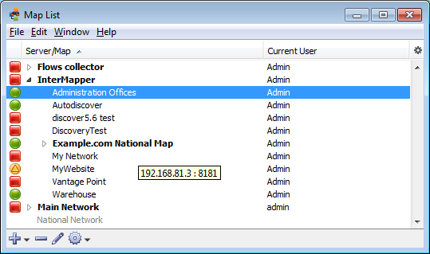
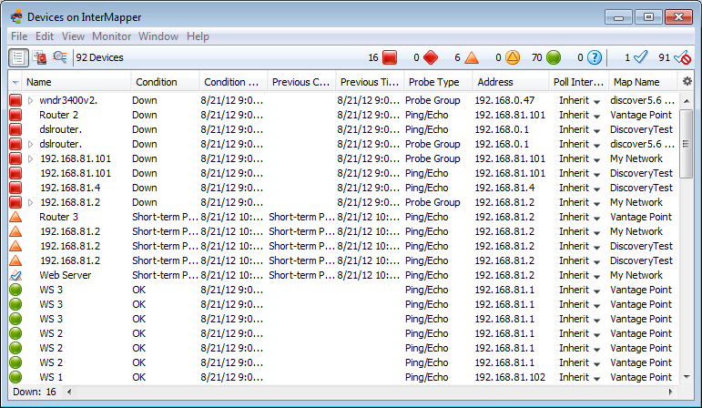

Choose from a submenu listing all available charts for the current map window
- Select and clear the check mark on individual charts from the submenu to show or hide them.
- Choose Show Charts to show all charts.
- Choose Hide Charts to hide all charts.
| Menu Command
|
Description |
| Minimize |
|
| Choose the Zoom command to expand (or contract) the frontmost window to the size necessary to show all devices, or to the maximum size of its current screen, if all items cannot be shown at the same time. If the Toolbar is shown, the minimum window width is the width of the toolbar. | |
| Send
to Back |
Send the front-most window to the back. |
| Slideshow... |
Rotate between open map windows. |
|
|
|
| Charts (submenu) |
Choose from a submenu of defined charts. Note: In the Charts window, a Show Chart context menu item has the same effect. |
| Map
List |
|
| Device
List |
|
Minimizes the frontmost InterMapper window.
Choose the Zoom command to expand the frontmost window to the largest size necessary to show all devices, or to the maximum size of its current screen, if all items cannot be shown at the same time.
Use the Slideshow... command to rotate the open map windows at a specified rate.

Use the Logs selection from the Window menu to choose from a submenu of log files. You can view a history of events, outages, connections to the web and remote servers, or custom logs you set up yourself.

Event Log window.
Each time a device changes state, an entry is made in an event log window. In addition, InterMapper logs messages for the following events:
For more information, see the Overview of Information
and Log Windows
|
|
Choose from a submenu listing all available charts for the current map window
|
Use the Map List command to open the Map List window or bring it to the front.

Use the Device List command to view the Device List window, which shows a global device list. InterMapper
keeps a server-wide list of all the devices that are being monitored on all
enabled maps that the current logged-in user can see.

The Device list window.
For more information, see The Device List Window.